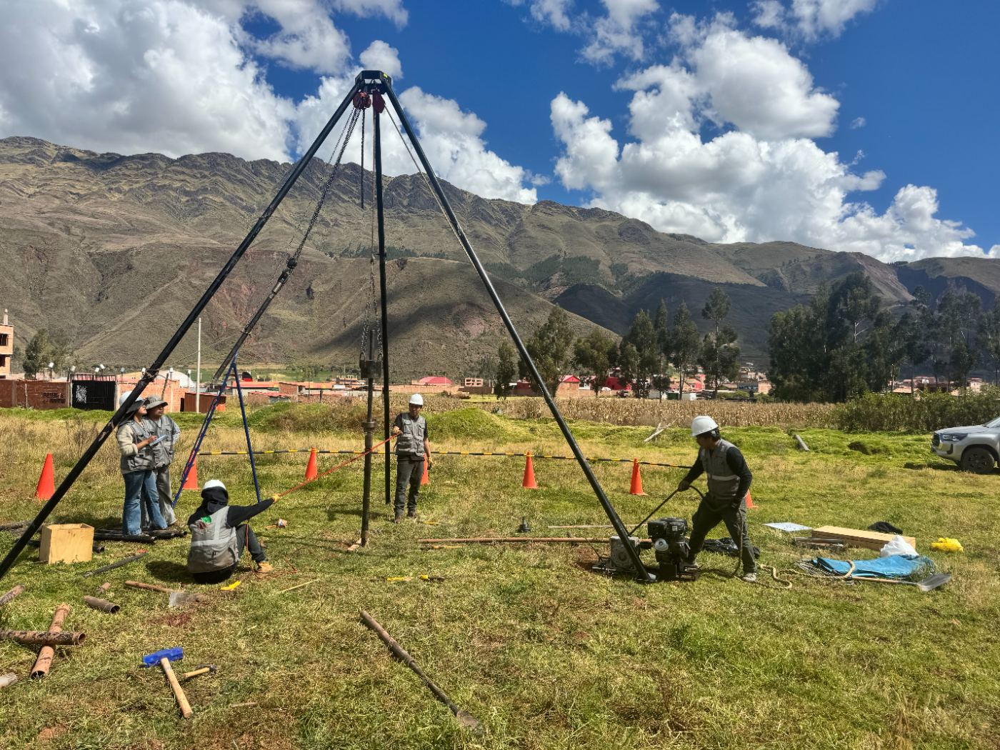
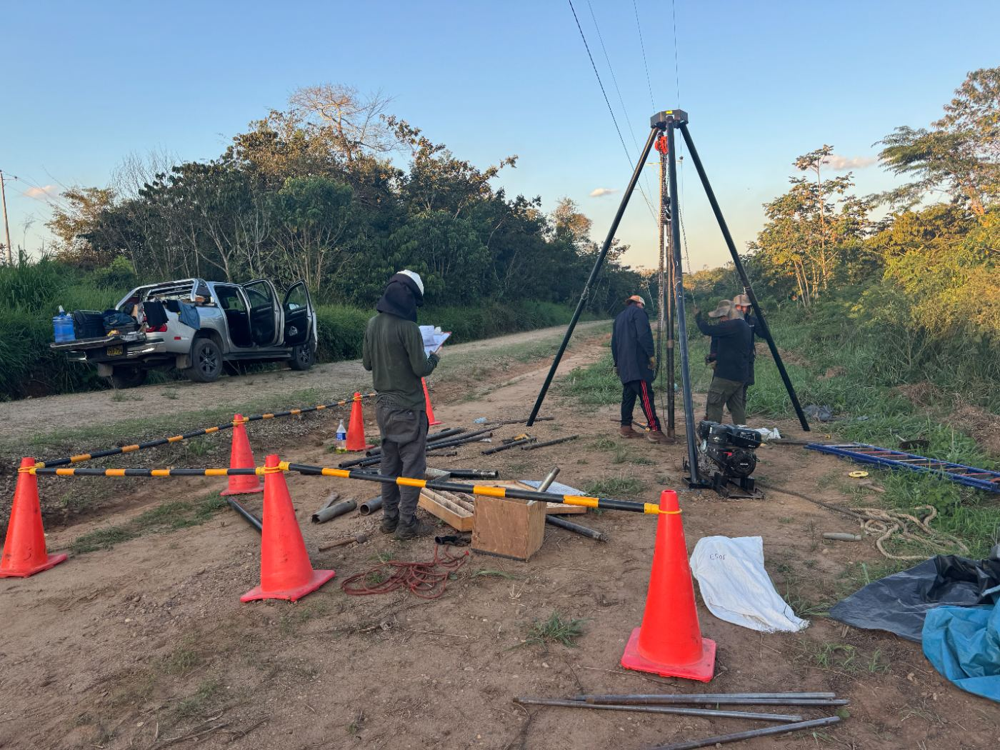
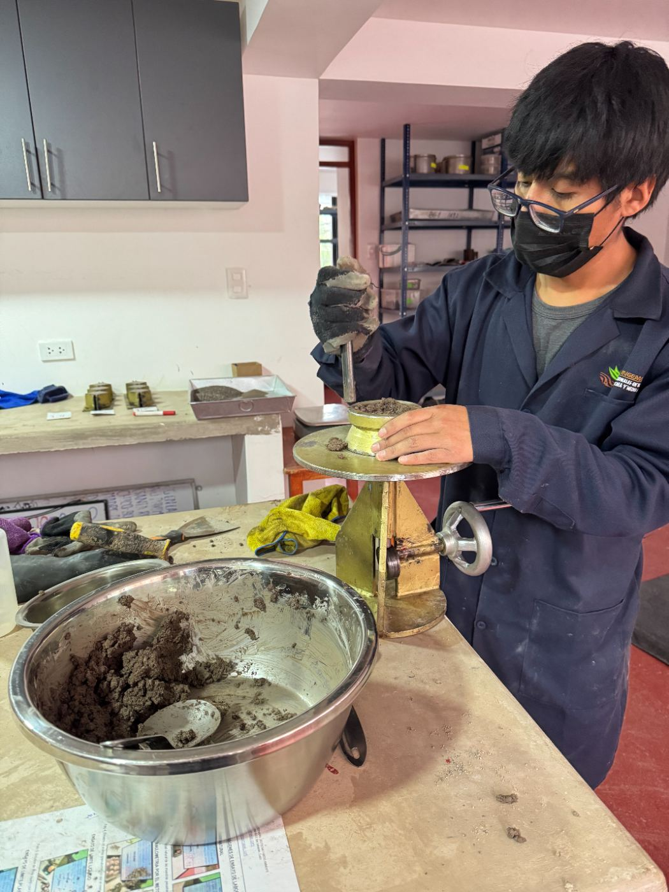
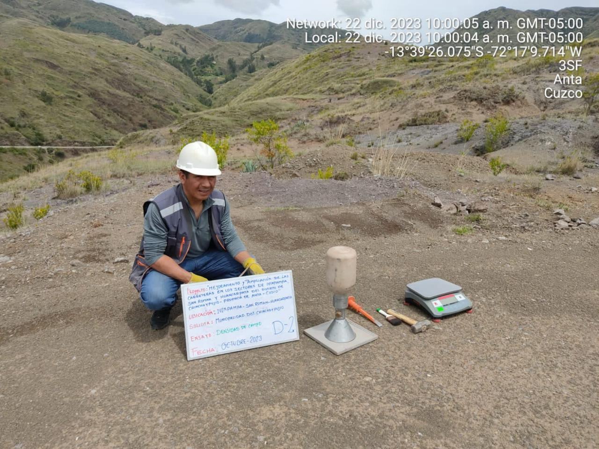
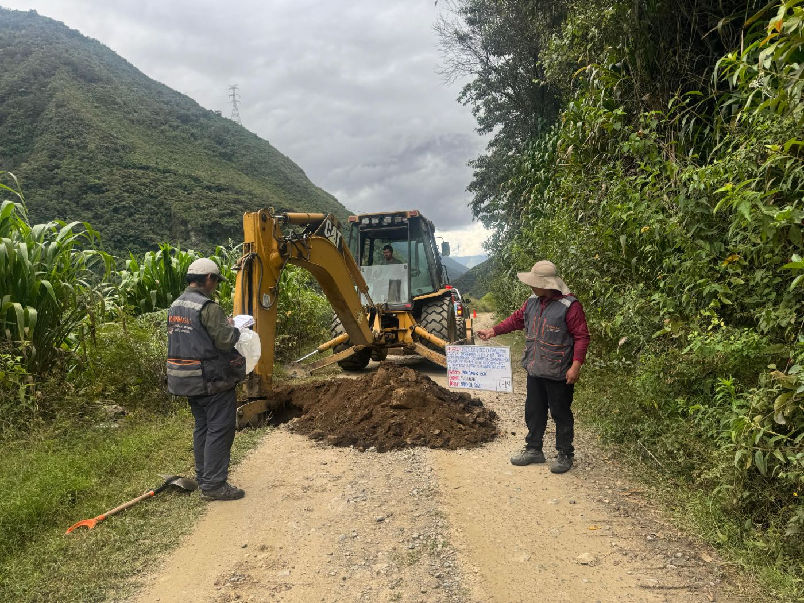
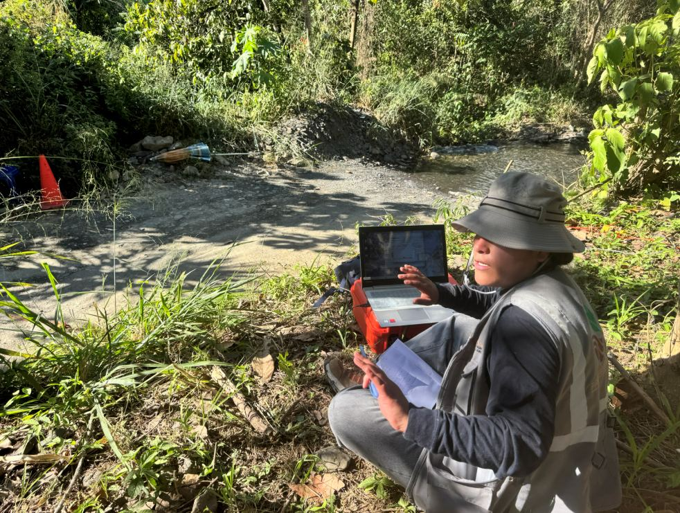

Ensayos de laboratorio en materiales de construcción y medio ambiente
Consultoría en estudio geotécnicos, geofísicos, ambientales y gestión social.


Ingeniería cusqueña con alcance nacional
Fundado en 2019 por un equipo de jóvenes ingenieros cusqueños, el laboratorio nace con el propósito de ofrecer servicios técnicos especializados en el control de calidad de materiales de construcción. Tras un proceso de consolidación, en 2026 alcanza un hito significativo al convertirse en el primer laboratorio acreditado de la región Cusco ante el INACAL, bajo los requisitos de la NTP ISO 17025:2017. El alcance de esta acreditación comprende los ensayos realizados en las matrices de suelo, concreto y medio ambiente, lo cual avala su competencia técnica y la confiabilidad de sus resultados.
Misión
Brindar servicios técnicos confiables y oportunos para todo tipo de proyectos y clientes, asegurando que los altos estándares de calidad se mantengan invariables en cada ensayo realizado.
Visión
Ser una empresa estable, confiable y referente en el sur del país, reconocida por su compromiso, calidad profesional y experiencia.

Cuatro líneas
de especialidad
Estudios de mecánica de suelos, para todo tipo de proyectos de construcción.
Ensayos , estándares y especiales.
Métodos no invasivos para caracterización del subsuelo.
Monitoreos, instrumentos de gestión ambiental y gestión social.


Ingeniería geotécnica
Informes con análisis detallados, ensayos de laboratorio y recomendaciones constructivas, respaldados por acreditación INACAL-DA.
Estudios de mecánica de suelos (EMS)
Diseño de mezclas y estudios especiales

Laboratorio de suelos y concreto

Resultados confiables
al instante, en obra





Servicios geofísicos
Métodos no invasivos que brindan información continua del subsuelo para geotecnia, hidrogeología, minería, ingeniería civil y medio ambiente.

Medio ambiente y gestión social
Entidades que confían en nosotros


Conversemos
sobre su proyecto